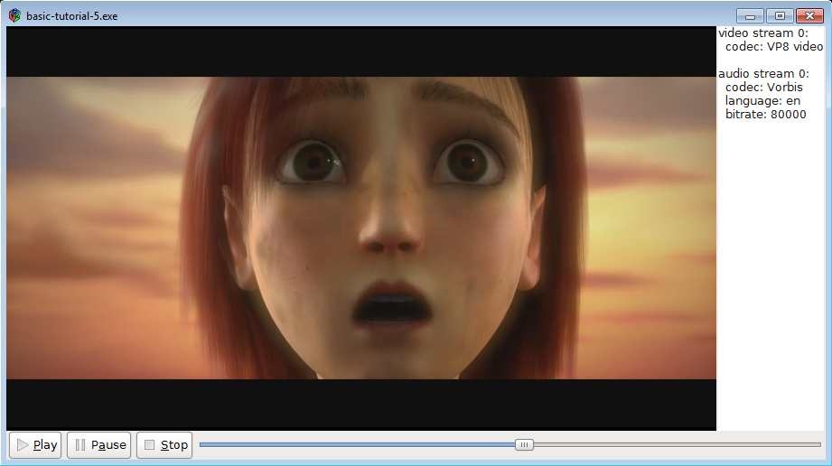

Basic tutorial 5: GUI toolkit integration
Goal
This tutorial shows how to integrate GStreamer in a Graphical User Interface (GUI) toolkit like GTK+. Basically, GStreamer takes care of media playback while the GUI toolkit handles user interaction. The most interesting parts are those in which both libraries have to interact: Instructing GStreamer to output video to a GTK+ window and forwarding user actions to GStreamer.
In particular, you will learn:
-
How to tell GStreamer to output video to a particular window (instead of creating its own window).
-
How to continuously refresh the GUI with information from GStreamer.
-
How to update the GUI from the multiple threads of GStreamer, an operation forbidden on most GUI toolkits.
-
A mechanism to subscribe only to the messages you are interested in, instead of being notified of all of them.
Introduction
We are going to build a media player using the GTK+ toolkit, but the concepts apply to other toolkits like QT, for example. A minimum knowledge of GTK+ will help understand this tutorial.
The main point is telling GStreamer to output the video to a window of
our choice. The specific mechanism depends on the operating system (or
rather, on the windowing system), but GStreamer provides a layer of
abstraction for the sake of platform independence. This independence
comes through the GstVideoOverlay interface, that allows the application to
tell a video sink the handler of the window that should receive the
rendering.
GObject interfaces
A GObject interface (which GStreamer uses) is a set of functions that an element can implement. If it does, then it is said to support that particular interface. For example, video sinks usually create their own windows to display video, but, if they are also capable of rendering to an external window, they can choose to implement the
GstVideoOverlayinterface and provide functions to specify this external window. From the application developer point of view, if a certain interface is supported, you can use it and forget about which kind of element is implementing it. Moreover, if you are usingplaybin, it will automatically expose some of the interfaces supported by its internal elements: You can use your interface functions directly onplaybinwithout knowing who is implementing them!
Another issue is that GUI toolkits usually only allow manipulation of the graphical “widgets” through the main (or application) thread, whereas GStreamer usually spawns multiple threads to take care of different tasks. Calling GTK+ functions from within callbacks will usually fail, because callbacks execute in the calling thread, which does not need to be the main thread. This problem can be solved by posting a message on the GStreamer bus in the callback: The messages will be received by the main thread which will then react accordingly.
Finally, so far we have registered a handle_message function that got
called every time a message appeared on the bus, which forced us to
parse every message to see if it was of interest to us. In this tutorial
a different method is used that registers a callback for each kind of
message, so there is less parsing and less code overall.
A media player in GTK+
Let's write a very simple media player based on playbin, this time, with a GUI!
Copy this code into a text file named basic-tutorial-5.c (or find it
in the SDK installation).
basic-tutorial-5.c
#include <string.h>
#include <gtk/gtk.h>
#include <gst/gst.h>
#include <gst/video/videooverlay.h>
#include <gdk/gdk.h>
#if defined (GDK_WINDOWING_X11)
#include <gdk/gdkx.h>
#elif defined (GDK_WINDOWING_WIN32)
#include <gdk/gdkwin32.h>
#elif defined (GDK_WINDOWING_QUARTZ)
#include <gdk/gdkquartz.h>
#endif
/* Structure to contain all our information, so we can pass it around */
typedef struct _CustomData {
GstElement *playbin; /* Our one and only pipeline */
GtkWidget *slider; /* Slider widget to keep track of current position */
GtkWidget *streams_list; /* Text widget to display info about the streams */
gulong slider_update_signal_id; /* Signal ID for the slider update signal */
GstState state; /* Current state of the pipeline */
gint64 duration; /* Duration of the clip, in nanoseconds */
} CustomData;
/* This function is called when the GUI toolkit creates the physical window that will hold the video.
* At this point we can retrieve its handler (which has a different meaning depending on the windowing system)
* and pass it to GStreamer through the VideoOverlay interface. */
static void realize_cb (GtkWidget *widget, CustomData *data) {
GdkWindow *window = gtk_widget_get_window (widget);
guintptr window_handle;
if (!gdk_window_ensure_native (window))
g_error ("Couldn't create native window needed for GstVideoOverlay!");
/* Retrieve window handler from GDK */
#if defined (GDK_WINDOWING_WIN32)
window_handle = (guintptr)GDK_WINDOW_HWND (window);
#elif defined (GDK_WINDOWING_QUARTZ)
window_handle = gdk_quartz_window_get_nsview (window);
#elif defined (GDK_WINDOWING_X11)
window_handle = GDK_WINDOW_XID (window);
#endif
/* Pass it to playbin, which implements VideoOverlay and will forward it to the video sink */
gst_video_overlay_set_window_handle (GST_VIDEO_OVERLAY (data->playbin), window_handle);
}
/* This function is called when the PLAY button is clicked */
static void play_cb (GtkButton *button, CustomData *data) {
gst_element_set_state (data->playbin, GST_STATE_PLAYING);
}
/* This function is called when the PAUSE button is clicked */
static void pause_cb (GtkButton *button, CustomData *data) {
gst_element_set_state (data->playbin, GST_STATE_PAUSED);
}
/* This function is called when the STOP button is clicked */
static void stop_cb (GtkButton *button, CustomData *data) {
gst_element_set_state (data->playbin, GST_STATE_READY);
}
/* This function is called when the main window is closed */
static void delete_event_cb (GtkWidget *widget, GdkEvent *event, CustomData *data) {
stop_cb (NULL, data);
gtk_main_quit ();
}
/* This function is called everytime the video window needs to be redrawn (due to damage/exposure,
* rescaling, etc). GStreamer takes care of this in the PAUSED and PLAYING states, otherwise,
* we simply draw a black rectangle to avoid garbage showing up. */
static gboolean draw_cb (GtkWidget *widget, cairo_t *cr, CustomData *data) {
if (data->state < GST_STATE_PAUSED) {
GtkAllocation allocation;
/* Cairo is a 2D graphics library which we use here to clean the video window.
* It is used by GStreamer for other reasons, so it will always be available to us. */
gtk_widget_get_allocation (widget, &allocation);
cairo_set_source_rgb (cr, 0, 0, 0);
cairo_rectangle (cr, 0, 0, allocation.width, allocation.height);
cairo_fill (cr);
}
return FALSE;
}
/* This function is called when the slider changes its position. We perform a seek to the
* new position here. */
static void slider_cb (GtkRange *range, CustomData *data) {
gdouble value = gtk_range_get_value (GTK_RANGE (data->slider));
gst_element_seek_simple (data->playbin, GST_FORMAT_TIME, GST_SEEK_FLAG_FLUSH | GST_SEEK_FLAG_KEY_UNIT,
(gint64)(value * GST_SECOND));
}
/* This creates all the GTK+ widgets that compose our application, and registers the callbacks */
static void create_ui (CustomData *data) {
GtkWidget *main_window; /* The uppermost window, containing all other windows */
GtkWidget *video_window; /* The drawing area where the video will be shown */
GtkWidget *main_box; /* VBox to hold main_hbox and the controls */
GtkWidget *main_hbox; /* HBox to hold the video_window and the stream info text widget */
GtkWidget *controls; /* HBox to hold the buttons and the slider */
GtkWidget *play_button, *pause_button, *stop_button; /* Buttons */
main_window = gtk_window_new (GTK_WINDOW_TOPLEVEL);
g_signal_connect (G_OBJECT (main_window), "delete-event", G_CALLBACK (delete_event_cb), data);
video_window = gtk_drawing_area_new ();
gtk_widget_set_double_buffered (video_window, FALSE);
g_signal_connect (video_window, "realize", G_CALLBACK (realize_cb), data);
g_signal_connect (video_window, "draw", G_CALLBACK (draw_cb), data);
play_button = gtk_button_new_from_stock (GTK_STOCK_MEDIA_PLAY);
g_signal_connect (G_OBJECT (play_button), "clicked", G_CALLBACK (play_cb), data);
pause_button = gtk_button_new_from_stock (GTK_STOCK_MEDIA_PAUSE);
g_signal_connect (G_OBJECT (pause_button), "clicked", G_CALLBACK (pause_cb), data);
stop_button = gtk_button_new_from_stock (GTK_STOCK_MEDIA_STOP);
g_signal_connect (G_OBJECT (stop_button), "clicked", G_CALLBACK (stop_cb), data);
data->slider = gtk_scale_new_with_range (GTK_ORIENTATION_HORIZONTAL, 0, 100, 1);
gtk_scale_set_draw_value (GTK_SCALE (data->slider), 0);
data->slider_update_signal_id = g_signal_connect (G_OBJECT (data->slider), "value-changed", G_CALLBACK (slider_cb), data);
data->streams_list = gtk_text_view_new ();
gtk_text_view_set_editable (GTK_TEXT_VIEW (data->streams_list), FALSE);
controls = gtk_box_new (GTK_ORIENTATION_HORIZONTAL, 0);
gtk_box_pack_start (GTK_BOX (controls), play_button, FALSE, FALSE, 2);
gtk_box_pack_start (GTK_BOX (controls), pause_button, FALSE, FALSE, 2);
gtk_box_pack_start (GTK_BOX (controls), stop_button, FALSE, FALSE, 2);
gtk_box_pack_start (GTK_BOX (controls), data->slider, TRUE, TRUE, 2);
main_hbox = gtk_box_new (GTK_ORIENTATION_HORIZONTAL, 0);
gtk_box_pack_start (GTK_BOX (main_hbox), video_window, TRUE, TRUE, 0);
gtk_box_pack_start (GTK_BOX (main_hbox), data->streams_list, FALSE, FALSE, 2);
main_box = gtk_box_new (GTK_ORIENTATION_VERTICAL, 0);
gtk_box_pack_start (GTK_BOX (main_box), main_hbox, TRUE, TRUE, 0);
gtk_box_pack_start (GTK_BOX (main_box), controls, FALSE, FALSE, 0);
gtk_container_add (GTK_CONTAINER (main_window), main_box);
gtk_window_set_default_size (GTK_WINDOW (main_window), 640, 480);
gtk_widget_show_all (main_window);
}
/* This function is called periodically to refresh the GUI */
static gboolean refresh_ui (CustomData *data) {
gint64 current = -1;
/* We do not want to update anything unless we are in the PAUSED or PLAYING states */
if (data->state < GST_STATE_PAUSED)
return TRUE;
/* If we didn't know it yet, query the stream duration */
if (!GST_CLOCK_TIME_IS_VALID (data->duration)) {
if (!gst_element_query_duration (data->playbin, GST_FORMAT_TIME, &data->duration)) {
g_printerr ("Could not query current duration.\n");
} else {
/* Set the range of the slider to the clip duration, in SECONDS */
gtk_range_set_range (GTK_RANGE (data->slider), 0, (gdouble)data->duration / GST_SECOND);
}
}
if (gst_element_query_position (data->playbin, GST_FORMAT_TIME, ¤t)) {
/* Block the "value-changed" signal, so the slider_cb function is not called
* (which would trigger a seek the user has not requested) */
g_signal_handler_block (data->slider, data->slider_update_signal_id);
/* Set the position of the slider to the current pipeline positoin, in SECONDS */
gtk_range_set_value (GTK_RANGE (data->slider), (gdouble)current / GST_SECOND);
/* Re-enable the signal */
g_signal_handler_unblock (data->slider, data->slider_update_signal_id);
}
return TRUE;
}
/* This function is called when new metadata is discovered in the stream */
static void tags_cb (GstElement *playbin, gint stream, CustomData *data) {
/* We are possibly in a GStreamer working thread, so we notify the main
* thread of this event through a message in the bus */
gst_element_post_message (playbin,
gst_message_new_application (GST_OBJECT (playbin),
gst_structure_new_empty ("tags-changed")));
}
/* This function is called when an error message is posted on the bus */
static void error_cb (GstBus *bus, GstMessage *msg, CustomData *data) {
GError *err;
gchar *debug_info;
/* Print error details on the screen */
gst_message_parse_error (msg, &err, &debug_info);
g_printerr ("Error received from element %s: %s\n", GST_OBJECT_NAME (msg->src), err->message);
g_printerr ("Debugging information: %s\n", debug_info ? debug_info : "none");
g_clear_error (&err);
g_free (debug_info);
/* Set the pipeline to READY (which stops playback) */
gst_element_set_state (data->playbin, GST_STATE_READY);
}
/* This function is called when an End-Of-Stream message is posted on the bus.
* We just set the pipeline to READY (which stops playback) */
static void eos_cb (GstBus *bus, GstMessage *msg, CustomData *data) {
g_print ("End-Of-Stream reached.\n");
gst_element_set_state (data->playbin, GST_STATE_READY);
}
/* This function is called when the pipeline changes states. We use it to
* keep track of the current state. */
static void state_changed_cb (GstBus *bus, GstMessage *msg, CustomData *data) {
GstState old_state, new_state, pending_state;
gst_message_parse_state_changed (msg, &old_state, &new_state, &pending_state);
if (GST_MESSAGE_SRC (msg) == GST_OBJECT (data->playbin)) {
data->state = new_state;
g_print ("State set to %s\n", gst_element_state_get_name (new_state));
if (old_state == GST_STATE_READY && new_state == GST_STATE_PAUSED) {
/* For extra responsiveness, we refresh the GUI as soon as we reach the PAUSED state */
refresh_ui (data);
}
}
}
/* Extract metadata from all the streams and write it to the text widget in the GUI */
static void analyze_streams (CustomData *data) {
gint i;
GstTagList *tags;
gchar *str, *total_str;
guint rate;
gint n_video, n_audio, n_text;
GtkTextBuffer *text;
/* Clean current contents of the widget */
text = gtk_text_view_get_buffer (GTK_TEXT_VIEW (data->streams_list));
gtk_text_buffer_set_text (text, "", -1);
/* Read some properties */
g_object_get (data->playbin, "n-video", &n_video, NULL);
g_object_get (data->playbin, "n-audio", &n_audio, NULL);
g_object_get (data->playbin, "n-text", &n_text, NULL);
for (i = 0; i < n_video; i++) {
tags = NULL;
/* Retrieve the stream's video tags */
g_signal_emit_by_name (data->playbin, "get-video-tags", i, &tags);
if (tags) {
total_str = g_strdup_printf ("video stream %d:\n", i);
gtk_text_buffer_insert_at_cursor (text, total_str, -1);
g_free (total_str);
gst_tag_list_get_string (tags, GST_TAG_VIDEO_CODEC, &str);
total_str = g_strdup_printf (" codec: %s\n", str ? str : "unknown");
gtk_text_buffer_insert_at_cursor (text, total_str, -1);
g_free (total_str);
g_free (str);
gst_tag_list_free (tags);
}
}
for (i = 0; i < n_audio; i++) {
tags = NULL;
/* Retrieve the stream's audio tags */
g_signal_emit_by_name (data->playbin, "get-audio-tags", i, &tags);
if (tags) {
total_str = g_strdup_printf ("\naudio stream %d:\n", i);
gtk_text_buffer_insert_at_cursor (text, total_str, -1);
g_free (total_str);
if (gst_tag_list_get_string (tags, GST_TAG_AUDIO_CODEC, &str)) {
total_str = g_strdup_printf (" codec: %s\n", str);
gtk_text_buffer_insert_at_cursor (text, total_str, -1);
g_free (total_str);
g_free (str);
}
if (gst_tag_list_get_string (tags, GST_TAG_LANGUAGE_CODE, &str)) {
total_str = g_strdup_printf (" language: %s\n", str);
gtk_text_buffer_insert_at_cursor (text, total_str, -1);
g_free (total_str);
g_free (str);
}
if (gst_tag_list_get_uint (tags, GST_TAG_BITRATE, &rate)) {
total_str = g_strdup_printf (" bitrate: %d\n", rate);
gtk_text_buffer_insert_at_cursor (text, total_str, -1);
g_free (total_str);
}
gst_tag_list_free (tags);
}
}
for (i = 0; i < n_text; i++) {
tags = NULL;
/* Retrieve the stream's subtitle tags */
g_signal_emit_by_name (data->playbin, "get-text-tags", i, &tags);
if (tags) {
total_str = g_strdup_printf ("\nsubtitle stream %d:\n", i);
gtk_text_buffer_insert_at_cursor (text, total_str, -1);
g_free (total_str);
if (gst_tag_list_get_string (tags, GST_TAG_LANGUAGE_CODE, &str)) {
total_str = g_strdup_printf (" language: %s\n", str);
gtk_text_buffer_insert_at_cursor (text, total_str, -1);
g_free (total_str);
g_free (str);
}
gst_tag_list_free (tags);
}
}
}
/* This function is called when an "application" message is posted on the bus.
* Here we retrieve the message posted by the tags_cb callback */
static void application_cb (GstBus *bus, GstMessage *msg, CustomData *data) {
if (g_strcmp0 (gst_structure_get_name (gst_message_get_structure (msg)), "tags-changed") == 0) {
/* If the message is the "tags-changed" (only one we are currently issuing), update
* the stream info GUI */
analyze_streams (data);
}
}
int main(int argc, char *argv[]) {
CustomData data;
GstStateChangeReturn ret;
GstBus *bus;
/* Initialize GTK */
gtk_init (&argc, &argv);
/* Initialize GStreamer */
gst_init (&argc, &argv);
/* Initialize our data structure */
memset (&data, 0, sizeof (data));
data.duration = GST_CLOCK_TIME_NONE;
/* Create the elements */
data.playbin = gst_element_factory_make ("playbin", "playbin");
if (!data.playbin) {
g_printerr ("Not all elements could be created.\n");
return -1;
}
/* Set the URI to play */
g_object_set (data.playbin, "uri", "https://www.freedesktop.org/software/gstreamer-sdk/data/media/sintel_trailer-480p.webm", NULL);
/* Connect to interesting signals in playbin */
g_signal_connect (G_OBJECT (data.playbin), "video-tags-changed", (GCallback) tags_cb, &data);
g_signal_connect (G_OBJECT (data.playbin), "audio-tags-changed", (GCallback) tags_cb, &data);
g_signal_connect (G_OBJECT (data.playbin), "text-tags-changed", (GCallback) tags_cb, &data);
/* Create the GUI */
create_ui (&data);
/* Instruct the bus to emit signals for each received message, and connect to the interesting signals */
bus = gst_element_get_bus (data.playbin);
gst_bus_add_signal_watch (bus);
g_signal_connect (G_OBJECT (bus), "message::error", (GCallback)error_cb, &data);
g_signal_connect (G_OBJECT (bus), "message::eos", (GCallback)eos_cb, &data);
g_signal_connect (G_OBJECT (bus), "message::state-changed", (GCallback)state_changed_cb, &data);
g_signal_connect (G_OBJECT (bus), "message::application", (GCallback)application_cb, &data);
gst_object_unref (bus);
/* Start playing */
ret = gst_element_set_state (data.playbin, GST_STATE_PLAYING);
if (ret == GST_STATE_CHANGE_FAILURE) {
g_printerr ("Unable to set the pipeline to the playing state.\n");
gst_object_unref (data.playbin);
return -1;
}
/* Register a function that GLib will call every second */
g_timeout_add_seconds (1, (GSourceFunc)refresh_ui, &data);
/* Start the GTK main loop. We will not regain control until gtk_main_quit is called. */
gtk_main ();
/* Free resources */
gst_element_set_state (data.playbin, GST_STATE_NULL);
gst_object_unref (data.playbin);
return 0;
}
If you need help to compile this code, refer to the Building the tutorials section for your platform: Linux, Mac OS X or Windows, or use this specific command on Linux:
gcc basic-tutorial-5.c -o basic-tutorial-5 `pkg-config --cflags --libs gstreamer-interfaces-1.0 gtk+-3.0 gstreamer-1.0If you need help to run this code, refer to the Running the tutorials section for your platform: Linux, Mac OS X or Windows.
This tutorial opens a GTK+ window and displays a movie, with accompanying audio. The media is fetched from the Internet, so the window might take a few seconds to appear, depending on your connection speed. The Window has some GTK+ buttons to Pause, Stop and Play the movie, and a slider to show the current position of the stream, which can be dragged to change it. Also, information about the stream is shown on a column at the right edge of the window.
Bear in mind that there is no latency management (buffering), so on slow connections, the movie might stop after a few seconds. See how Basic tutorial 12: Streaming solves this issue.
Required libraries:
gstreamer-video-1.0 gtk+-3.0 gstreamer-1.0
Walkthrough
Regarding this tutorial's structure, we are not going to use forward function definitions anymore: Functions will be defined before they are used. Also, for clarity of explanation, the order in which the snippets of code are presented will not always match the program order. Use the line numbers to locate the snippets in the complete code.
#include <gdk/gdk.h>
#if defined (GDK_WINDOWING_X11)
#include <gdk/gdkx.h>
#elif defined (GDK_WINDOWING_WIN32)
#include <gdk/gdkwin32.h>
#elif defined (GDK_WINDOWING_QUARTZ)
#include <gdk/gdkquartzwindow.h>
#endif
The first thing worth noticing is that we are no longer completely platform-independent. We need to include the appropriate GDK headers for the windowing system we are going to use. Fortunately, there are not that many supported windowing systems, so these three lines often suffice: X11 for Linux, Win32 for Windows and Quartz for Mac OSX.
This tutorial is composed mostly of callback functions, which will be
called from GStreamer or GTK+, so let's review the main function,
which registers all these callbacks.
int main(int argc, char *argv[]) {
CustomData data;
GstStateChangeReturn ret;
GstBus *bus;
/* Initialize GTK */
gtk_init (&argc, &argv);
/* Initialize GStreamer */
gst_init (&argc, &argv);
/* Initialize our data structure */
memset (&data, 0, sizeof (data));
data.duration = GST_CLOCK_TIME_NONE;
/* Create the elements */
data.playbin = gst_element_factory_make ("playbin", "playbin");
if (!data.playbin) {
g_printerr ("Not all elements could be created.\n");
return -1;
}
/* Set the URI to play */
g_object_set (data.playbin, "uri", "https://www.freedesktop.org/software/gstreamer-sdk/data/media/sintel_trailer-480p.webm", NULL);
Standard GStreamer initialization and playbin pipeline creation, along with GTK+ initialization. Not much new.
/* Connect to interesting signals in playbin */
g_signal_connect (G_OBJECT (data.playbin), "video-tags-changed", (GCallback) tags_cb, &data);
g_signal_connect (G_OBJECT (data.playbin), "audio-tags-changed", (GCallback) tags_cb, &data);
g_signal_connect (G_OBJECT (data.playbin), "text-tags-changed", (GCallback) tags_cb, &data);
We are interested in being notified when new tags (metadata) appears on
the stream. For simplicity, we are going to handle all kinds of tags
(video, audio and text) from the same callback tags_cb.
/* Create the GUI */
create_ui (&data);
All GTK+ widget creation and signal registration happens in this function. It contains only GTK-related function calls, so we will skip over its definition. The signals to which it registers convey user commands, as shown below when reviewing the callbacks.
/* Instruct the bus to emit signals for each received message, and connect to the interesting signals */
bus = gst_element_get_bus (data.playbin);
gst_bus_add_signal_watch (bus);
g_signal_connect (G_OBJECT (bus), "message::error", (GCallback)error_cb, &data);
g_signal_connect (G_OBJECT (bus), "message::eos", (GCallback)eos_cb, &data);
g_signal_connect (G_OBJECT (bus), "message::state-changed", (GCallback)state_changed_cb, &data);
g_signal_connect (G_OBJECT (bus), "message::application", (GCallback)application_cb, &data);
gst_object_unref (bus);
In Playback tutorial 1: Playbin usage, gst_bus_add_watch() is
used to register a function that receives every message posted to the
GStreamer bus. We can achieve a finer granularity by using signals
instead, which allow us to register only to the messages we are
interested in. By calling gst_bus_add_signal_watch() we instruct the
bus to emit a signal every time it receives a message. This signal has
the name message::detail where detail is the message that
triggered the signal emission. For example, when the bus receives the
EOS message, it emits a signal with the name message::eos.
This tutorial is using the Signals's details to register only to the
messages we care about. If we had registered to the message signal, we
would be notified of every single message, just like
gst_bus_add_watch() would do.
Keep in mind that, in order for the bus watches to work (be it a
gst_bus_add_watch() or a gst_bus_add_signal_watch()), there must be
GLib Main Loop running. In this case, it is hidden inside the
GTK+ main loop.
/* Register a function that GLib will call every second */
g_timeout_add_seconds (1, (GSourceFunc)refresh_ui, &data);
Before transferring control to GTK+, we use g_timeout_add_seconds () to register yet another callback, this time with a timeout, so it
gets called every second. We are going to use it to refresh the GUI from
the refresh_ui function.
After this, we are done with the setup and can start the GTK+ main loop. We will regain control from our callbacks when interesting things happen. Let's review the callbacks. Each callback has a different signature, depending on who will call it. You can look up the signature (the meaning of the parameters and the return value) in the documentation of the signal.
/* This function is called when the GUI toolkit creates the physical window that will hold the video.
* At this point we can retrieve its handler (which has a different meaning depending on the windowing system)
* and pass it to GStreamer through the VideoOverlay interface. */
static void realize_cb (GtkWidget *widget, CustomData *data) {
GdkWindow *window = gtk_widget_get_window (widget);
guintptr window_handle;
if (!gdk_window_ensure_native (window))
g_error ("Couldn't create native window needed for GstVideoOverlay!");
/* Retrieve window handler from GDK */
#if defined (GDK_WINDOWING_WIN32)
window_handle = (guintptr)GDK_WINDOW_HWND (window);
#elif defined (GDK_WINDOWING_QUARTZ)
window_handle = gdk_quartz_window_get_nsview (window);
#elif defined (GDK_WINDOWING_X11)
window_handle = GDK_WINDOW_XID (window);
#endif
/* Pass it to playbin, which implements VideoOverlay and will forward it to the video sink */
gst_video_overlay_set_window_handle (GST_VIDEO_OVERLAY (data->playbin), window_handle);
}
The code comments talks by itself. At this point in the life cycle of
the application, we know the handle (be it an X11's XID, a Window's
HWND or a Quartz's NSView) of the window where GStreamer should
render the video. We simply retrieve it from the windowing system and
pass it to playbin through the GstVideoOverlay interface using
gst_video_overlay_set_window_handle(). playbin will locate the video
sink and pass the handler to it, so it does not create its own window
and uses this one.
Not much more to see here; playbin and the GstVideoOverlay really simplify
this process a lot!
/* This function is called when the PLAY button is clicked */
static void play_cb (GtkButton *button, CustomData *data) {
gst_element_set_state (data->playbin, GST_STATE_PLAYING);
}
/* This function is called when the PAUSE button is clicked */
static void pause_cb (GtkButton *button, CustomData *data) {
gst_element_set_state (data->playbin, GST_STATE_PAUSED);
}
/* This function is called when the STOP button is clicked */
static void stop_cb (GtkButton *button, CustomData *data) {
gst_element_set_state (data->playbin, GST_STATE_READY);
}
These three little callbacks are associated with the PLAY, PAUSE and
STOP buttons in the GUI. They simply set the pipeline to the
corresponding state. Note that in the STOP state we set the pipeline to
READY. We could have brought the pipeline all the way down to the
NULL state, but, the transition would then be a little slower, since some
resources (like the audio device) would need to be released and
re-acquired.
/* This function is called when the main window is closed */
static void delete_event_cb (GtkWidget *widget, GdkEvent *event, CustomData *data) {
stop_cb (NULL, data);
gtk_main_quit ();
}
gtk_main_quit() will eventually make the call to to gtk_main_run()
in main to terminate, which, in this case, finishes the program. Here,
we call it when the main window is closed, after stopping the pipeline
(just for the sake of tidiness).
/* This function is called everytime the video window needs to be redrawn (due to damage/exposure,
* rescaling, etc). GStreamer takes care of this in the PAUSED and PLAYING states, otherwise,
* we simply draw a black rectangle to avoid garbage showing up. */
static gboolean expose_cb (GtkWidget *widget, GdkEventExpose *event, CustomData *data) {
if (data->state < GST_STATE_PAUSED) {
GtkAllocation allocation;
GdkWindow *window = gtk_widget_get_window (widget);
cairo_t *cr;
/* Cairo is a 2D graphics library which we use here to clean the video window.
* It is used by GStreamer for other reasons, so it will always be available to us. */
gtk_widget_get_allocation (widget, &allocation);
cr = gdk_cairo_create (window);
cairo_set_source_rgb (cr, 0, 0, 0);
cairo_rectangle (cr, 0, 0, allocation.width, allocation.height);
cairo_fill (cr);
}
return FALSE;
}
When there is data flow (in the PAUSED and PLAYING states) the video
sink takes care of refreshing the content of the video window. In the
other cases, however, it will not, so we have to do it. In this example,
we just fill the window with a black
rectangle.
/* This function is called when the slider changes its position. We perform a seek to the
* new position here. */
static void slider_cb (GtkRange *range, CustomData *data) {
gdouble value = gtk_range_get_value (GTK_RANGE (data->slider));
gst_element_seek_simple (data->playbin, GST_FORMAT_TIME, GST_SEEK_FLAG_FLUSH | GST_SEEK_FLAG_KEY_UNIT,
(gint64)(value * GST_SECOND));
}
This is an example of how a complex GUI element like a seeker bar (or
slider that allows seeking) can be very easily implemented thanks to
GStreamer and GTK+ collaborating. If the slider has been dragged to a
new position, tell GStreamer to seek to that position
with gst_element_seek_simple() (as seen in Basic tutorial 4: Time
management). The
slider has been setup so its value represents seconds.
It is worth mentioning that some performance (and responsiveness) can be gained by doing some throttling, this is, not responding to every single user request to seek. Since the seek operation is bound to take some time, it is often nicer to wait half a second (for example) after a seek before allowing another one. Otherwise, the application might look unresponsive if the user drags the slider frantically, which would not allow any seek to complete before a new one is queued.
/* This function is called periodically to refresh the GUI */
static gboolean refresh_ui (CustomData *data) {
gint64 current = -1;
/* We do not want to update anything unless we are in the PAUSED or PLAYING states */
if (data->state < GST_STATE_PAUSED)
return TRUE;
This function will move the slider to reflect the current position of
the media. First off, if we are not in the PLAYING state, we have
nothing to do here (plus, position and duration queries will normally
fail).
/* If we didn't know it yet, query the stream duration */
if (!GST_CLOCK_TIME_IS_VALID (data->duration)) {
if (!gst_element_query_duration (data->playbin, GST_FORMAT_TIME, &data->duration)) {
g_printerr ("Could not query current duration.\n");
} else {
/* Set the range of the slider to the clip duration, in SECONDS */
gtk_range_set_range (GTK_RANGE (data->slider), 0, (gdouble)data->duration / GST_SECOND);
}
}
We recover the duration of the clip if we didn't know it, so we can set the range for the slider.
if (gst_element_query_position (data->playbin, GST_FORMAT_TIME, ¤t)) {
/* Block the "value-changed" signal, so the slider_cb function is not called
* (which would trigger a seek the user has not requested) */
g_signal_handler_block (data->slider, data->slider_update_signal_id);
/* Set the position of the slider to the current pipeline positoin, in SECONDS */
gtk_range_set_value (GTK_RANGE (data->slider), (gdouble)current / GST_SECOND);
/* Re-enable the signal */
g_signal_handler_unblock (data->slider, data->slider_update_signal_id);
}
return TRUE;
We query the current pipeline position, and set the position of the
slider accordingly. This would trigger the emission of the
value-changed signal, which we use to know when the user is dragging
the slider. Since we do not want seeks happening unless the user
requested them, we disable the value-changed signal emission during
this operation with g_signal_handler_block() and
g_signal_handler_unblock().
Returning TRUE from this function will keep it called in the future. If we return FALSE, the timer will be removed.
/* This function is called when new metadata is discovered in the stream */
static void tags_cb (GstElement *playbin, gint stream, CustomData *data) {
/* We are possibly in a GStreamer working thread, so we notify the main
* thread of this event through a message in the bus */
gst_element_post_message (playbin,
gst_message_new_application (GST_OBJECT (playbin),
gst_structure_new_empty ("tags-changed")));
}
This is one of the key points of this tutorial. This function will be called when new tags are found in the media, from a streaming thread, this is, from a thread other than the application (or main) thread. What we want to do here is to update a GTK+ widget to reflect this new information, but GTK+ does not allow operating from threads other than the main one.
The solution is to make playbin post a message on the bus and return
to the calling thread. When appropriate, the main thread will pick up
this message and update GTK.
gst_element_post_message() makes a GStreamer element post the given
message to the bus. gst_message_new_application() creates a new
message of the APPLICATION type. GStreamer messages have different
types, and this particular type is reserved to the application: it will
go through the bus unaffected by GStreamer. The list of types can be
found in the GstMessageType documentation.
Messages can deliver additional information through their embedded
GstStructure, which is a very flexible data container. Here, we create
a new structure with gst_structure_new, and name it tags-changed, to
avoid confusion in case we wanted to send other application messages.
Later, once in the main thread, the bus will receive this message and
emit the message::application signal, which we have associated to the
application_cb function:
/* This function is called when an "application" message is posted on the bus.
* Here we retrieve the message posted by the tags_cb callback */
static void application_cb (GstBus *bus, GstMessage *msg, CustomData *data) {
if (g_strcmp0 (gst_structure_get_name (gst_message_get_structure (msg)), "tags-changed") == 0) {
/* If the message is the "tags-changed" (only one we are currently issuing), update
* the stream info GUI */
analyze_streams (data);
}
}
Once me made sure it is the tags-changed message, we call the
analyze_streams function, which is also used in Playback tutorial 1: Playbin usage and is
more detailed there. It basically recovers the tags from the stream and
writes them in a text widget in the GUI.
The error_cb, eos_cb and state_changed_cb are not really worth
explaining, since they do the same as in all previous tutorials, but
from their own function now.
And this is it! The amount of code in this tutorial might seem daunting but the required concepts are few and easy. If you have followed the previous tutorials and have a little knowledge of GTK, you probably understood this one can now enjoy your very own media player!

Exercise
If this media player is not good enough for you, try to change the text widget that displays the information about the streams into a proper list view (or tree view). Then, when the user selects a different stream, make GStreamer switch streams! To switch streams, you will need to read Playback tutorial 1: Playbin usage.
Conclusion
This tutorial has shown:
-
How to output the video to a particular window handle using
gst_video_overlay_set_window_handle(). -
How to refresh the GUI periodically by registering a timeout callback with
g_timeout_add_seconds (). -
How to convey information to the main thread by means of application messages through the bus with
gst_element_post_message(). -
How to be notified only of interesting messages by making the bus emit signals with
gst_bus_add_signal_watch()and discriminating among all message types using the signal details.
This allows you to build a somewhat complete media player with a proper Graphical User Interface.
The following basic tutorials keep focusing on other individual GStreamer topics
It has been a pleasure having you here, and see you soon!
The results of the search are